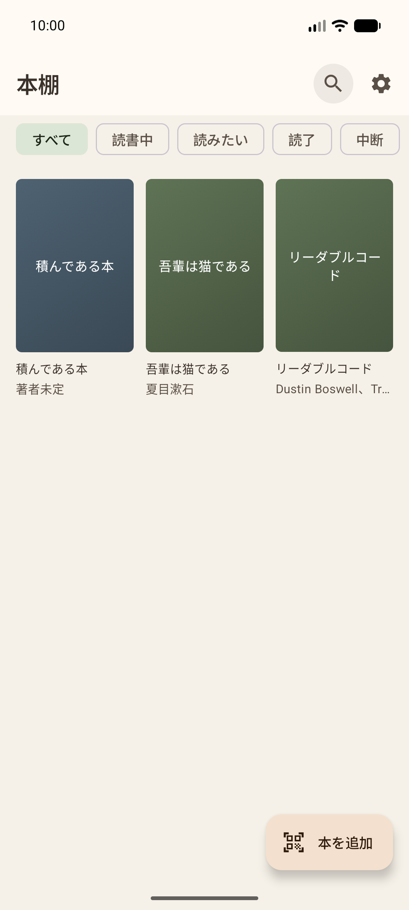
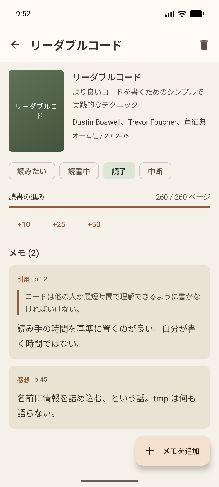
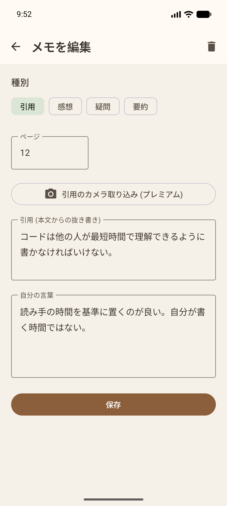

バーコードで本を登録。気づいたその場で書き留める。



心に残った一文は「引用」に、それを読んで思ったことは「自分の言葉」に。 2つを分けて書けるので、あとから読み返したときに、 本が言っていたことと自分が考えたことを取り違えません。
メモには「引用・感想・疑問・要約」の種別とページ番号を添えられます。 あとで探すときの手がかりになります。
本の裏表紙のバーコードにカメラを向けるだけで、書名・著者・出版社が入ります。 カメラの使用許可を求めないので、初回から迷わず使えます。
日本の本は上下2段のバーコードが並んでいて、下の段は価格を表す別のコードです。 間違えて下の段を読んでしまったときは、どちらを読めばよいか画面で案内します。
バーコードが汚れている、カバーで隠れている、電子書籍で現物がない、 といったときは ISBN の手入力でも登録できます。
アカウント登録は不要です。書いたメモが開発者のサーバーに送られることはありません。 広告も表示しませんし、利用状況の解析も行いません。
外部と通信するのは、ISBN から書誌情報を取得するときだけです。
無料版では本を3冊まで登録できます。メモの数に制限はありません。 書き留めること自体を止めてしまっては、このアプリの意味がないためです。
書誌情報は openBD から取得しています。 和書の書名・著者・出版社を正確に引けます。 表紙画像やページ数は Google Books で補完します。